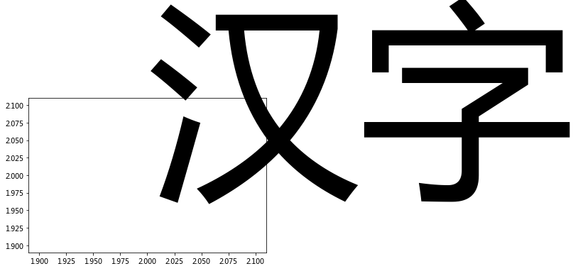

解决Matplotlib绘图显示中文问题¶
1. 下载微软雅黑字体¶
https://github.com/computational-class/ccbook/blob/master/data/msyh.ttf
2. 找到字体文件夹¶
import matplotlib
print(matplotlib.matplotlib_fname())
/opt/anaconda3/lib/python3.7/site-packages/matplotlib/mpl-data/matplotlibrc
3. 将字体文件放到ttf目录¶
打开matplotlibrc所在这个文件夹
进入fonts\ttf目录
把第一步下载的msyh.ttf放到该目录下面
4. 修改matplotlibrc文件¶
使用任何一个文件编辑器(推荐sublime Text2),修改该文件,通过ctrl+f搜索找到
#axes.unicode_minus : True ## use unicode for the minus symbol
#font.family : sans-serif
#font.sans-serif : DejaVu Sans, Bitstream Vera Sans, Computer Modern Sans Serif, Lucida Grande, Verdana, Geneva, Lucid, Arial, Helvetica, Avant Garde, sans-serif
分别修改为以下三行
axes.unicode_minus : False ## use unicode for the minus symbol
font.family : Microsoft YaHei
font.sans-serif : Microsoft YaHei, DejaVu Sans, Bitstream Vera Sans, Computer Modern Sans Serif, Lucida Grande, Verdana, Geneva, Lucid, Arial, Helvetica, Avant Garde, sans-serif
首先, 三行都需要删除第一个#,取消注释
第一行,修改True为False,是为了正常显示负号
第二行和第三行是为了使用微软雅黑作为默认字体
5. 删除缓存¶
import matplotlib
print(matplotlib.get_cachedir())
/Users/datalab/.matplotlib
一般在用户
.matplotlib文件夹📂删除该目录下的所有文件
6. 重启Jupyter Notebook¶
刷新页面即可
或者点击
服务-重启
# test
%matplotlib inline
import matplotlib.pyplot as plt
plt.plot(2, 2)
plt.text(2, 2, '汉字', fontsize = 300)
plt.show()
